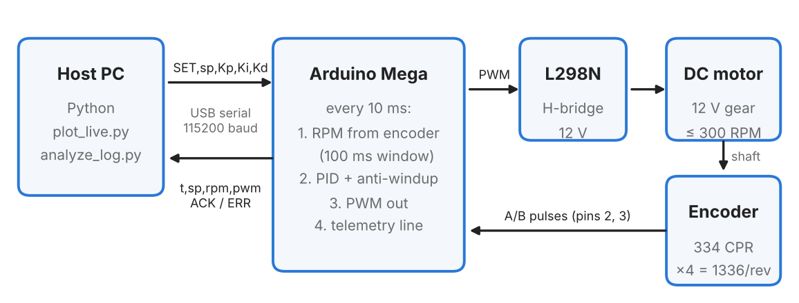
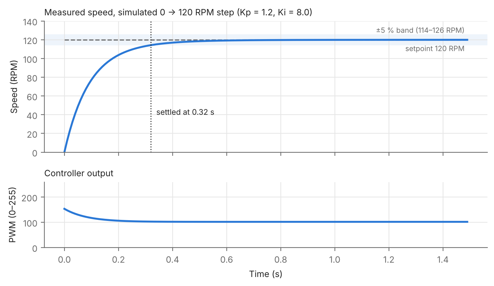
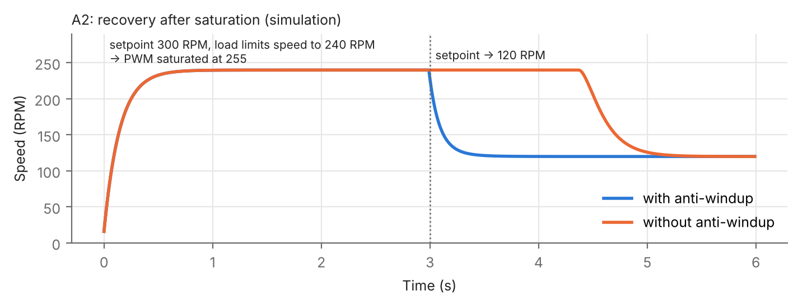
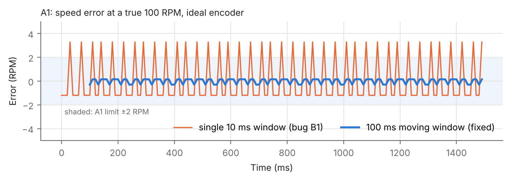

A DC motor driven with a fixed PWM duty cycle (open loop) does not hold a constant speed: the speed drops when the load or the supply voltage changes and differs from motor to motor because of friction. Many mechatronic systems (conveyors, robot wheels, pumps) need a defined speed regardless of these disturbances, which requires feedback control [1].
The goal of this project is a closed-loop speed controller on an Arduino Mega 2560 that measures the speed of a 12 V gear motor with a quadrature encoder and adjusts the PWM with a PID controller, plus a Python tool on a PC that changes the gains and plots the step response live. The target users are control students and lab instructors who want to try PID tuning on real hardware. The approved specification defines five requirements: speed measurement every 10 ms (R1), PID with anti-windup (R2), settling within ±5 % of 120 RPM in under 1 s (R3), gains and setpoint over Serial at 115200 baud (R4), and logging and live plotting at 100 Hz (R5).

Speed measurement (R1). Encoder channels A and B are connected to the interrupt pins 2 and 3 of the Mega [3]. Every edge on either channel calls an interrupt routine that decodes the quadrature state with a 16-entry lookup table (4× decoding), giving 334 × 4 = 1336 edges per revolution. Every 10 ms the main loop reads the counter and computes
RPM = edges / 1336 / Δt × 60.
One edge in a 10 ms window is worth 60 / (1336 × 0.01) = 4.49 RPM, which is coarser than the ±2 RPM required by A1. The first version therefore failed its test (bug B1). The final design sums the edges of the last 10 periods (100 ms moving window), which still delivers a new value every 10 ms but with 0.45 RPM resolution. The cost is a delay of about 50 ms in the measurement.
Controller (R2). The discrete PID runs at a fixed period Δt = 10 ms using a non-blocking micros() scheduler:
u = Kp·e + Ki·I − Kd·(yk − yk−1)/Δt, I ← clamp(I + e·Δt, 0, 255/Ki)
The output is limited to the PWM range 0–255. Clamping the integral so that Ki·I can never exceed the output range is a standard anti-windup method [1]. The derivative is computed on the measured speed instead of the error, so a setpoint change does not create a spike (“derivative kick”) [2]; this replaced the first version after bug B2. The L298N H-bridge [5] converts the PWM into the 12 V motor voltage.
Communication (R4, R5). The PC sends SET,<rpm>,<Kp>,<Ki>,<Kd>. The firmware validates the line (five fields, numbers, setpoint 0–300 RPM) and answers ACK,… or ERR,<reason> without changing the settings. Every 10 ms it sends t,setpoint,rpm,pwm (≈ 21 bytes, 2.1 kB/s, well below the 11.5 kB/s of 115200 baud). plot_live.py uses pySerial [6] and Matplotlib [7] to log every line to CSV and redraw the plot at 20 Hz, so plotting cannot slow down logging. analyze_log.py computes the settling time, dropped frames and the error against a tachometer reading from any log.
Software testing without hardware. All controller logic exists twice: in C++ in the firmware and as tested Python modules in src/. The Python modules run against a first-order motor model τ·dω/dt = K·u − ω [8] with τ = 0.15 s and 300 RPM at full PWM. 37 pytest tests cover all acceptance criteria.
Table 1 summarises the evidence for each acceptance criterion. Rows marked “pending” (shaded) are bench measurements that are carried out with the procedures P1–P5 in TESTING.md; they are filled in only with measured values.
| Crit. | Evidence | Expected | Result | Verdict |
|---|---|---|---|---|
| A1 | Test: ideal encoder at 50–300 RPM, every 10 ms sample | ≤ ±2 RPM | worst 0.36 RPM (single-window version: 3.89 RPM) | Pass |
| A1 | P1: optical tachometer at 100 RPM | ≤ ±2 RPM | pending – ___ RPM | |
| A2 | Test: PWM saturated at 255 for 3 s, then setpoint 300 → 120 RPM | Ki·I ≤ 255; faster recovery than without clamp | clamped; recovery ≈ 0.3 s vs ≈ 2 s (Fig. 3) | Pass |
| A3 | Simulation of 0 → 120 RPM step | in 114–126 RPM before 1.0 s | 0.32 s, no overshoot (Fig. 2) | Pass (sim.) |
| A3 | P3: motor step response, 3 runs | < 1.0 s | pending – ___ s | |
| A4 | Test: SET,150,2.0,0.1,0.0 while running; invalid lines | gains + setpoint updated, ACK; ERR keeps settings | ACK,150,2.000,0.100,0.000; ERR, unchanged | Pass |
| A4 | P4: same command in Serial Monitor | ACK, speed → 150 RPM | pending | |
| A5 | Test: 200-row log through plotter, gap detection | 100 Hz, 0 dropped | 100.0 Hz, 0 dropped, file identical | Pass |
| A5 | P5: 10 s live run over USB | ~1000 rows, 0 dropped | pending |
Table 1 – Results per acceptance criterion (all 37 automated tests pass).



| Quantity | Trusted reference | Our output | Error |
|---|---|---|---|
| RPM formula | Hand calculation: 1336 edges in 1 s = 60 RPM; 2226.67 edges in 1 s = 100 RPM | 60.00 / 100.00 RPM | < 0.01 RPM |
| Speed estimate 50–300 RPM | Exact speed of an ideal encoder | worst 0.36 RPM | within 0.36 RPM at 50, 100, 120, 200, 300 RPM |
| Motor model, PWM 64/128/200 | Analytic first-order response ω = K·u·(1 − e−t/τ) [8] | max deviation 0.95 / 1.90 / 2.97 RPM | 1.26 % of final speed |
| Time constant | 63.2 % of final value at t = τ [8] | 64.5 % | 1.3 percentage points |
| Encoder vs tachometer | Handheld optical tachometer, 60/100/150 RPM | pending | pending |
To check that the tests can actually detect faults, five deliberate bugs were inserted (anti-windup removed, 10 ms window restored, setpoint not updated, off-by-one in the frame counter, 4× slower motor). Each was caught by the corresponding test.
The most useful lesson was that writing the test first exposes design errors in the specification itself: the requirement “RPM every 10 ms” and the accuracy “±2 RPM” cannot both hold with a single 10 ms window, which a two-line hand calculation shows but which we did not see when writing the spec. We also learned that tests only check what they exercise: the derivative kick existed from Milestone 2 but was invisible because every test used Kd = 0. Testing the controller against a simulated motor let us develop and debug the logic before the hardware was ready, and the mutation check gave us confidence that the tests are meaningful.
If we started again we would (1) identify the motor model from a real open-loop step in the first week and tune the gains on it, (2) generate the C++ constants and test vectors from one shared source so firmware and Python cannot drift apart, (3) write the hand calculations for each acceptance criterion while writing the spec, and (4) run the hardware procedures continuously instead of at the end.
Gemini (Google) in Milestone 1; Claude Code (Anthropic) in Milestones 2–4.
Gemini produced a first template for the specification, which we revised. Claude Code wrote most of the code, tests, firmware and documentation from our milestone briefs in a cloud copy of the repository, ran the tests, and drafted this report. We pushed its commits from our own computers, reviewed the files, re-ran the tests locally and are responsible for all content.
| Files / functions | Tool |
|---|---|
| SPEC.md first draft | Gemini |
firmware/motor_pid/motor_pid.ino; src/pid.py, encoder.py, controller.py, protocol.py, logger.py, plot_live.py, analyze_log.py, motor_sim.py, run_sim.py; all tests; TESTING.md; figures and draft of this report | Claude Code |
| Problem choice, hardware selection, requirements, team roles, bench measurements | Our own work |
| What was wrong | How found | Fix |
|---|---|---|
| B1: RPM from one 10 ms window, error up to 3.9 RPM | A1 test failed; hand calculation 4.49 RPM per edge | 100 ms moving window; SPEC §8 updated |
| B2: derivative kick in the PID | New test with Kd > 0 | Derivative on measurement |
| B3: ACK format differed between Python and firmware | Comparison while writing the firmware | Unified to 3 decimals; SPEC §5 |
Tests were checked with expected values from hand calculations and textbook formulas, a mutation check (five deliberate bugs, all caught), and by observing the B1/B2 tests fail before and pass after the fixes. AI output is not cited as a source.